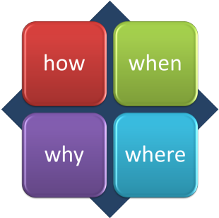
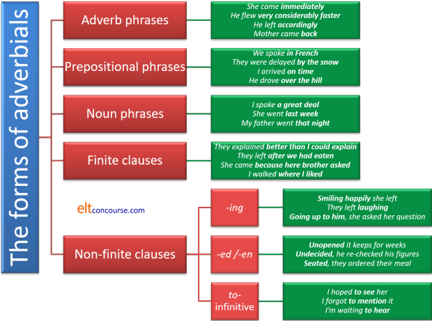
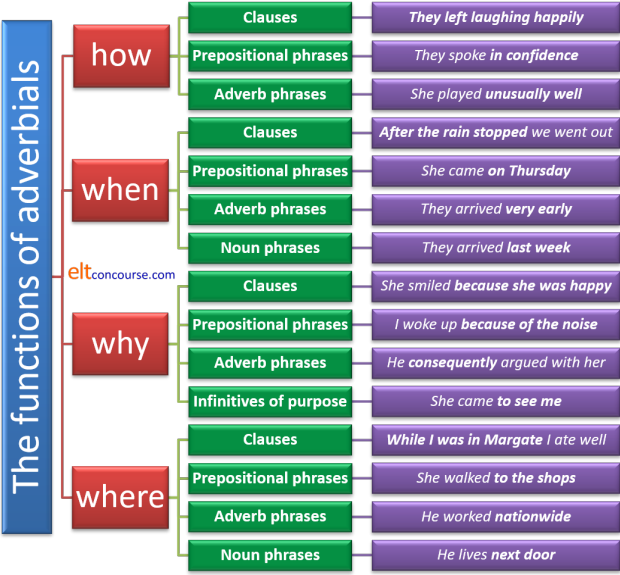
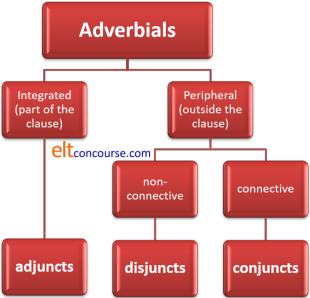
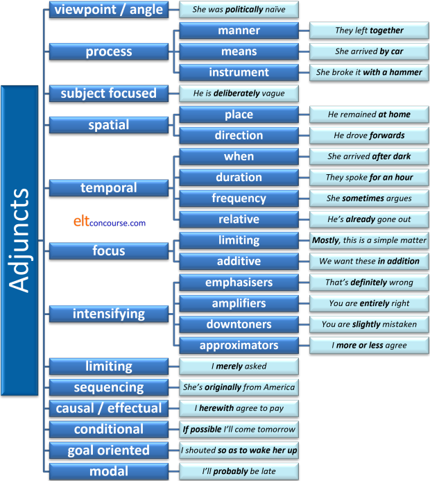
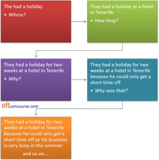

Adverbials:
adjuncts, disjuncts, subjuncts and conjuncts

You can also use this menu to select the part of the guide that
interests you. If this is a new area for you, the advice is to
work through it sequentially.
Click on -top- at the end of each section to return
to this menu.
 |
Defining adverbial forms |
As the graphic is intended to show, adverbials give us extra
information about the verb. Specifically, they answer the four
questions above.
Adverbs, as you will know if you have followed
the guide to adverbs, linked at the end in the list of related guides, also tell
us about the verb (and are, therefore, a special type of adverbial).
Specifically, adverbs tell us about
- How
She walked ridiculously slowly - Where
She walked out - When or How often
She frequently walked
She walked yesterday - How much
She walked extensively
Some of what follows will cover some adverbs but in the context of different types of adverbial rather than as a distinct and discrete word class.
The point to remember is: adverbs are all adverbials but adverbials
are not all adverbs.
Very briefly:
- He went yesterday
contains an adverb, yesterday, acting as an adverbial telling us when he left. By some definitions, even this is really a noun acting as an adverb. - He went by car
contains a prepositional phrase, by car, acting as an adverbial telling us how he travelled. - She spoke hurriedly
contains an adverb, hurriedly, acting as an adverbial telling us something about her manner of speaking. - She spoke because I prompted her
contains a subordinate clause, because I prompted her, acting as an adverbial telling us why she spoke.
In only two of the sentences above (1 and 3), is the adverbial actually an adverb (and one of those is slightly questionable).
To be sure if you understand the distinction,
try this mini-test.
If you couldn't do the test easily, follow
the guide to adverbs (new
tab) before
you return to this page.
It is quite commonly assumed that adverbs are the most important
class of adverbials and should be taught that way.
However, the facts do not bear this out.
Adverbs and adverb phrases, such as slowly or
exceptionally quickly, only constitute around one fifth of adverbials.
By far the most frequent realisation of adverbials in English, over
half, is via
a prepositional phrase such as to the door, over the hill,
before the meeting and so on.
The rest are divided up between non-finite to-infinitive
clauses, noun phrases, non-finite -ing and -ed / -en clauses and finite
clauses, none of which is very common. We make no apology,
therefore, for our focus below on adverb and prepositional phrases.
Here are some simple examples of the forms that adverbials take:
- Adverb phrases:
- They lost heavily
- Her mother fell very seriously
- Prepositional phrases:
- He worked in the garden
- Her brother visited after work
- Noun phrases:
- She arrived yesterday
- He stayed two weeks
He read the story yesterday
the story is not functioning as an adverbial but the noun yesterday is adverbial.
- Finite clauses:
- They stayed where they had always stayed
- She arrived when the fun was over
- Non-finite clauses:
- Entering he found them together
- Broken the machine was useless
- I am dying to see her
In the example here, the phrase to see her is an adverbial because the word to cannot be replaced with in order to but in, e.g.:
She stopped to look in the window
the phrase to look in the window can be replaced with in order to look in the window and this is an example of a complex subordinator, sometimes called the infinitive of purpose and not a simple non-finite clause structure. This is not usually a difference with which you want to trouble learners.
Here's a summary of the way that adverbials can be realised in the grammar of English. The focus here is on form but functions are exemplified.

 |
Functions of adverbials |
The diagram above focuses on the form of adverbials, here we focus on their function.
You will have noticed if you did the mini-test, that adverbials come
in all sorts. Any language which gives us
information about the verb (where, when, why, how) can be classed as an
adverbial and taught that way.
Just like adverbs proper, adverbials perform four major functions.
Here are some examples of them:
- To express how:
- They arrived by car
- She broke the glass using her fist
- They spent the money really quickly
- To express when:
- They sold the house before they moved to Canada
- Mary arrived after midnight
- She left it too late
- Her son was born that day
- To express why:
- As I was in London, I went to see her
- I came to see you
(This, too, is a prepositional phrase rather than an non-finite form per se.) - She left as a result of his call
- I stopped to listen
(The preference is to consider this as a subordinator (replaceable with in order to listen) but this is frequently referred to as an infinitive of purpose.)
- To express where:
- They walked down the road
- They stayed indoors
- She walked three miles

Now try this test to see if you can identify what's what with adverbials.
The list in the diagram above focuses only on four functions of adverbials – to express: manner, time, reason and place. Adverbials fulfil a range of other functions, too, as we shall shortly see.
Elsewhere on this site is an alternative, functional way of looking
at adverbials, and for that you need to go to
the guide to circumstances, linked below.
Also on this site, there is
a guide to
prepositional phrases which is centrally relevant to this area.
There are some punctuation issues. Adverbials, especially in
the initial position are often separated in some way from the rest of the clause.
So, while:
I explained it to him in Italian
She arrives on Thursday
I ate good food while I was there
etc.
are all correctly punctuated, when the adverbial takes the initial
position we need:
In Italian, I explained it to him
On Thursday, she arrives
While I was there, I ate good food
There's a bit more on adverbial positions in sentences and the
punctuation below.
Writers and publishing houses differ in this regard and no punctuation
after the adverbial is often encountered.
 |
adjuncts, disjuncts and conjuncts |
Adverbials come in three main flavours. Consider the following sentences, focusing on the bit in black:
- I saw him yesterday afternoon.
- Obviously, he didn't seem happy.
- He isn't happy yet he gets on with life.
- In sentence 1, we have an adjunct
- Adjuncts are integrated into the sentence but their removal
leaves a well-formed and understandable sentence although we lose
some information.
The definition of what qualifies as an adjunct is a fraught area, much discussed.
Technically, some analysts see an adjunct as anything in a clause which can be removed to leave a well-formed sentence. So, for example, in:
Last week she went on holiday
we have two adjuncts: last week and on holiday, which can be removed to leave:
She went
Others will include adjectives and other items as adjuncts because they, too, can often be removed without the result being a malformed sentence.
Here, because we are concerned with adverbials which, by definition modify verb phrases, we will mostly confine the term adjunct to any adverbial which modifies the verb phrase in some way and which is an integral, though not obligatory, part of the clause. We will also consider as adjuncts adverbials which modify adjectives and other adverbs but that is a lesser focus in what follows.
A simple test for adjuncts is to try fronting them:
We can front an adjunct in a positive declarative sentence so we allow, e.g.:
Slowly, she drove away
but we cannot front an adjunct in a negative declarative clause so we do not allow:
*Slowly, she didn't drive.
We shall see below that there is a form of adverbial which often appears to be an adjunct but is structurally and semantically somewhat different. It is called a subjunct and subjuncts are subordinate in some way, and cannot be the topic of an either-or or alternative question. - In sentence 2, we have a disjunct
- Disjuncts are used to evaluate the form or the content of what
is said. They occur outside the clause structure itself.
Removing them leaves a well-formed sentence or clause but we lose
the speaker's viewpoint. In this case, compare:
He didn't seem obviously happy
where we have an adjunct giving us some extra information about the adjective. That is to say, it is the adverb acting to modify the adjective in the usual way.
However, in:
He obviously didn't seem happy
we have a disjunct expressing the speaker's attitude to the proposition that he didn't seem happy. The speaker is implying that he or she believes the proposition to be true.
Disjuncts frequently come in the initial position before the clause to which they refer but, as we see above, they don't have to.
For effect, in speaking, we insert a pause after a disjunct and that can be represented by punctuation in writing. For example:
Patently, John was not interested.
As the examples in this bit show, we can front disjuncts in negative declarative sentences. - In sentence 3, we have a conjunct
- Conjuncts are also outside the clause structure and connect ideas in sentences or between sentences.
We can rephrase Sentence 3 as
He isn't happy. However, he gets on with life
The word However is a conjunct. Some conjuncts are conjunctions (like yet in example sentence 3) and there is a separate guide to conjunction on this site linked in the list of related guides at the end.
Like disjuncts, too, but unlike adjuncts, conjuncts may be fronted in negative declarative sentences and clauses so we can allow, e.g.:
My train was late. Consequently, I didn't get to the meeting.
The relationship can be seen like this:

Based on Quirk et al p421
This diagram does not consider subjuncts
but we shall come to them.
This all seems rather technical – does it really matter?
Yes, quite a lot. A good deal of functional language such as
expressing a viewpoint, saying how, when, where, why something occurs or connecting ideas logically depends for its
success on realisation through adverbials of one kind or another.
Adjunct or adverbial
|
We should pause for a moment to consider another slightly technical distinction: the difference between an obligatory adverbial and an adverbial adjunct. Both are adverbials but they differ in how they are used.
- By definition (adjunct
means a non-essential
extra), adjuncts provide optional data and removing them
does not affect the central meaning of the clause.
For example:
He ran to the door
He ran off
contain the prepositional phrase adjunct, to the door or the adverb adjunct off, but the clause can stand alone and still maintain its meaning as
He ran - However, in:
I put my laptop on my desk
I put my laptop away
we have a non-adjunct adverbial prepositional phrase, on my desk and the non-adjunct adverb away, and we cannot omit either and leave a comprehensible clause:
*I put my laptop
What we are dealing with here is a semantic rather than
grammatical distinction because some verbs in some of their senses require adverbial
complementation. These verbs are often called PP
complement transitive verbs because they are usually transitive and
require a prepositional phrase or other adverbial complement. The verbs are usually those referring to
causing something to be somewhere and they include:
keep, lay, place, plonk, position,
put, rest, set, site, situate, stick, stuff, treat.
In none of these cases can we have a well-formed sentence which lacks
a place adverbial although the polysemous nature of some of them
make it possible in certain senses. For example, we cannot
have:
*John laid the book
*I placed the vase
*I stuck the suitcase
*She positioned the car
*She plonked herself
*The woman rested her head
*They set the chair
and so on although, of course, the following with other senses of
the verb are possible:
The chicken laid an egg
I placed my bet
I rested my case
Mary set the clock
We ventured a question
and so on.
The verb treat, in the sense of behave towards rather than
the medical sense, is unusual because it requires an adverbial
referring to manner rather than place so, for example:
*He treated her
is not acceptable except in a medical sense or if the verb means
indulge but
He treated her very well
is fine.
There are some verbs, normally intransitive, including stay,
live, lie and venture which can be included in the
list of PP complement verbs when they mean live
temporarily, reside, place oneself horizontally and move
oneself into danger, respectively, so
I stayed in a hotel
is possible but, in the same sense of the verb,
*I stayed
is not and
I lived in a small cottage
is acceptable, but, in the same sense of resided,
*I lived
is not because it means survived or existed.
I lay on the bed
is acceptable but
I lay
is not.
We ventured into the castle
is acceptable, but in the same sense of the verb
*We ventured
is not.
When stay simply means remain, it requires no
complementing adverbial so
John left but I stayed
is acceptable and when venture means dare the
same applies but the verb is transitive in this sense, so:
We ventured a question
is acceptable without an adverbial but must retain a direct object.
Many intransitive verbs can, of course, be used without an
adjunct of any kind so we allow, for example:
The dog disappeared
The people came
It rained
Mary stood
and so on.
However, it is quite rare for intransitive verbs to be used without
an adjunct so we would probably feel more comfortable with:
The dog disappeared into the woods
The people came on time
It rained really hard
Mary stood in the corner
and so on.
This is purely a semantic and stylistic issue, not one to do with
the syntactical structures of the clauses in which adjuncts appear.
There's some confusion out here on the web because one
well-respected site states:
As far as I can figure out,
adverbials are only indispensable after the verbs (sic) put.
(Lott, D)
As we saw above, that is not a sustainable assertion because we have
identified at least a dozen other verbs which share a similar
characteristic. A bit more 'figuring out' is called for, perhaps.
 |
Syntactical homonymy |
This horrible expression refers to the fact that words and phrases can slide between classes because they can perform different functions depending on the intended meaning.
Some words and phrases exhibit this phenomenon and can act as
adjuncts in the normal way, modifying verbs, verb phrases, other
adverbs and adjectives. For example, in:
The train eventually
arrived at the station
Mary clearly believed him
She was happily drunk
The argued rather
aggressively
all the adverbs are adverbial
adjuncts acting to modify a verb phrase, a verb, an adjective and an
adverb respectively.
However, in:
Obviously,
she was trying to be helpful
Happily,
the train arrived on time
There was a good deal of argument.
Eventually, a decision
was made
She wasn't coming.
Rather, she actually came but very late.
we have the adverbs acting as disjuncts (the
first two examples) and conjuncts (the second two examples).
Some words can perform all three functions and their meaning
differs slightly in each role. For example:
I try to eat
naturally
Naturally, she was very
unhappy
There is a huge amount of work needed.
Naturally, it will be expensive.
In the first case, the word naturally is acting as an
adjunct to modify the verb eat. It means:
I try to eat natural rather than synthetic or
processed food.
In the second case, the word naturally is acting as a
disjunct, expressing how the speaker feels about the content of what
is being said. It means:
I was not surprised that she was very
unhappy.
In the third case, the word naturally is acting as a
conjunct, connecting the two sentences. It means:
There is a huge amount of work needed. It logically
follows that it will be expensive.
What this means is that we have examples of categorical indeterminacy: we do not know, just by looking at it, whether the item in question is an adjunct, a conjunct or a disjunct. We need to see what it is doing to assign it to a category.
 |
Adjuncts |
| Adjuncts are integral to the clause but may be omitted. | |
We need here to distinguish briefly between arguments and adjuncts.
Arguments are not usually omissible but adjuncts are.
Omissibility is the usual test for an adjunct so while we can remove the
phrase in the garden from
Mary and her mother worked in the garden
and leave a well-formed sentence:
Mary and her mother worked
showing that the phrase is an adjunct, we cannot remove the phrase
Mary and her mother from the sentence and leave
*Worked in the garden.
Equally, we can remove happily from:
John happily joined the game
showing that happily is an adjunct, we cannot remove the game
and leave
*John happily joined
because the game is an argument, not an adjunct.
Perceptive readers will note that some arguments are, in fact omissible
because some verbs are ambivalent so we can allow, e.g., both:
Mary ate the pie immediately
and
Mary ate immediately
so the test is not always absolute.
To get around this, some propose what is known as the relative clause
test so while we can have:
Mary ate the pie which was left over from the
party
showing that the pie is an argument, we cannot have
*Mary ate immediately which was then
showing that immediately cannot be considered an argument.
(Because this guide is focused on adverbials, we are only considering
adverbial adjuncts in what follows. Adjuncts can also modify, for
example, noun phrases as in:
The argument after dinner was soon settled
in which the adjunct, after dinner, modifies the noun phrase
the argument
She was very happy
in which the adjunct very modifies the adjective happy
He drove too quickly
in which the adjunct too modifies the adverb quickly.
The technical terms for these sorts of adjuncts are, respectively,
adnomial, adajectival and adadverbial but those are not terms which
should detain you or your learners.)
Adjuncts are by far the most common and flexible adverbials because they perform a wide range of functions in English.
- viewpoint (sometimes called angle)

- in expressions such as
Politically, the man was inept
or
Economically, the country is in trouble
the speaker is fronting the adverbial to draw attention to the view of the situation which is important. Often, this means putting the adverbial first. Another, non-adverb, example is
As far as studying is concerned, I'm really lazy.
Note that these are not examples of disjuncts (see below) because the adverbial will not necessarily apply to the whole following text or express the speaker's view of how a statement is to be understood:
The man was politically inept
The country is in trouble economically
In both these case, the adjunct is modifying only part of the clause, the adjective in the first case and the prepositional phrase in the second example.
In effect, we are saying that it is only in political matters that the man was inept and only so far as the economy is concerned that the country is in trouble.
Disjuncts, on the other hand, apply to the whole of a clause (which is why they are sometimes referred to as sentence adverbs or adverbials).
It is sometimes difficult to distinguish between a viewpoint adjunct and a style disjunct because style disjuncts also refer to how the speaker wants to be understood rather than commenting directly on the statement itself. If you have this confusion, it helps to think of viewpoint adjuncts as expressing the speaker's angle or 'take' on the statement.
Modification:
Viewpoint adjuncts allow very limited modification so, for example:
Purely economically ...
is possible but:
*Very economically ...
*Rather socially ...
*Quite chemically ...
are not available.
Viewpoint adjuncts may also be realised by non-finite verb forms in, for example:
Seen organisationally, ...
Considered socially, ...
but this is quite rare. - process
- these adjuncts refer to how something is done and there are
three main sorts:
- Manner:
She spoke impressively
They walked hand in hand
etc. - Means:
They got here by bus
He got in without paying - Instrument:
Cut it with a saw
The parcel was delivered by hand
In some languages, these kinds of processes may demand alternative case structures.
In some analyses, instrumental adjuncts are analysed separately.
Modification:
Process adjuncts of manner when they are adverbs allow extensive modification:
She spoke very / extremely / exceptionally etc. impressively
Prepositional phrases (including those used for manner, means and instruments) cannot be easily modified so we do not allow:
*They walked very arm in arm
*She arrived much by taxi
although a few expressions such as
He travels only / a lot by train
are possible. In such cases, there is a strong argument that we are modifying the verb, not the adjunct. - Manner:
- subject focused

- these adjuncts refer to the subject of the verb and are nearly
always adverbs or prepositional phrases of manner.
Examples are:
He is being wilfully dim
I did it on purpose
In both cases, the adjunct refers directly to the subject of the verb, not to the verb itself. For this reason, they can often be replaced by an expression using a copular verb and an adjective such as
He appeared wilful
or
It was intentional
Commonly, these will appear directly before or after the main verb phrase and any complement or object but can be fronted for emphasis. For example:
He intentionally insulted her
He left her alone deliberately
Stupidly, I forgot my keys
Modification:
Depending on the meaning of the adjuncts, modification is possible so we can have:
Very stupidly, I forgot to ask
It was wholly intentionally said
He left her alone quite / very deliberately
etc. but, as usual, prepositional phrases allow fewer modifications:
They did it clearly on purpose
They did it wholly / completely on purpose
are allowable but
*They did it very on purpose
is not because very can only modify adverbs when it functions itself as an adverb. - spatial / place

- as you might imagine, these refer to where things happen.
There are two sorts and they are often prepositional (although
clauses can be used as well as adverbs):
- Place:
She stayed in a bed and breakfast place
She slept where she had always slept
They stayed there - Direction:
They climbed over the hill
They went where no one had gone before
They marched onwards
You may see place adjuncts described as locative adjuncts (but not on this site).
Modification:
Because most place adjuncts are prepositional phrases, modification is rare and limited:
They went clear over the hill
She went right down the road
Place adjuncts have their own guide linked in the list of related guides at the end.
Not all place adverbials, in particular, qualify as adjuncts because they are sometimes an obligatory rather than optional part of the clause. This is explained above in the section on PP complement verbs such as put, place, stick etc. For example in:
My pyjamas lay on the bed
The car stayed in the garage
I laid the book down
we have prepositional phrases or an adverb acting as adverbials and in no case can we omit the adverbial and leave a well-formed clause. - Place:
- temporal / time
- again, no prizes for guessing that these refer to time but there
are some different sorts, realised by clauses, adverbs and
prepositional phrases:
- When:
I decided to stay after the wedding was finished
We spoke after the meeting
She left yesterday - Duration:
They watched television while I did all the cooking
They chatted throughout the performance
She hesitated briefly
He stayed for a week - Frequency:
She goes often
He delivers it every fourth Saturday - Relationship:
They are already in the house
They are not yet in the house
Many time adjuncts which are adverbs can be modified and the range of modifiers is quite large:
She very frequently arrives late
They spoke extremely briefly
but other time adjuncts allow no or very limited modification:
They spoke immediately / directly after the meeting
She stayed exactly for a week
although modifying the noun is more natural:
She stayed for exactly a week
Time adjuncts have their own guide linked in the list of related guides at the end. - When:
- focus

- these are mostly adverbs but prepositional phrases are also
common in this function.
Limiting:
chiefly, most importantly, in particular, only, purely etc. For example:
There's a lot we can do to help, in particular with the new website
which implies that our help will probably be limited to the website.
Additive:
also, in addition to, as well as etc. For example:
There's a lot to be done and we also have very little time
Again, we need to distinguish focusing adjuncts from attitudinal or content disjuncts (see below).
As adjuncts, these sorts of phrases and adverbs focus attention on part of the clause only. As disjuncts, they modify the whole clause so, for example:
I chiefly came to say goodbye
the word chiefly focuses the hearer on the verb and is an adjunct which could be replaced by only or just, for example, or left out altogether, of course.
However, in:
Chiefly, this is a question of finding enough money
the word chiefly applies to the whole of the following text. It is a disjunct and cannot be replaced with only or just.
Modification:
These adverbials cannot be modified so you can't say
*very in particular
or
*extremely only etc.
They are also known as particularisers, by the way. - intensifying
- these come in different sorts but are nearly all adverbs with a
few prepositional phrases:
Emphasisers (which add weight and usually modify noun phrases, adverbs or adjectives):
definitely, certainly etc. For example:
That's definitely the wrong way to talk to her
This is decidedly dull
It is certainly beautifully drawn
Amplifiers (which scale upwards and can often modify verbs, adverbs and adjectives):
completely, very much, absolutely, entirely, deeply, heartily etc. For example:
I heartily agree
It was absolutely idiotically designed
The story was deeply sad
Downtoners (which reduce the effect and modify verbs, adjectives, noun phrases and adverbs):
partly, hardly, quite, nearly, somewhat etc. For example:
He is somewhat rude to most people, I'm afraid
That is quite a mess
I nearly got lost
The work was barely competently done
Approximators (which express inexactitude and modify verbs, adjectives, noun phrases and adverbs):
approximately, roughly, more or less, in the region of etc. For example:
I can more or less see the point
It was roughly level
The cost is in the region of $1000
It was done more or less perfectly
Modification:
Emphasisers can be modified with very and most:
She will most certainly be here later
That is very definitely the case
Amplifiers and downtoners are not modified or only allow very
He is very deeply hurt
etc. and not always then because:
*She is very entirely right
is not possible.
There is a guide to these adverb modifiers on this site linked in the list of related guides at the end. - limiting

- these adverbials (which are almost always adverbs) limit the
range of the verb in some way. The usual list includes
She only bought a shirt
They even lied about it
They just left it where they found it
I merely asked
She nearly succeeded
I simply want an answer
They need careful handling in terms of word ordering to avoid ambiguity. For example:
Only he came to the meeting (nobody else came [determiner])
He only came to the meeting (and did not speak [adverb])
He came only to the meeting (and to nothing else [adverb])
He came to the only meeting (and there was only one meeting [adjective])
all mean something slightly different as do:
She just washed the shirt
She washed just the shirt
because the first implies that she did nothing else to the shirt and the second that she washed nothing except the shirt.
All these limiters need to be handled in the same way. The rule of thumb is to place the limiter immediately before the item it modifies.
This means, of course, that the terms migrate between word classes (see above). To operate as adjuncts, the words need immediately to precede or follow the verb phrase. - sequencing

- these often come at the beginning of a clause and include, e.g.:
originally, first, thirdly, in the first place, then, subsequently etc.
There is a distinction again to be made between sequencers which act as adjuncts and those, analysed below, which act as conjuncts.
In, for example:
He made lunch and then took it to the garden to eat
the adverb then is acting as a sequencer adjunct telling us the ordering of events, not linking the clauses (the coordinator and does the linking).
However, in:
He made lunch and then took it to the garden to eat
Afterwards, he cleared up the kitchen and washed the crockery and cutlery
the adverb afterwards is a conjunct linking the first sentence (about making lunch) to the second by anaphoric reference.
Another example of an adjunct sequencer appears in:
He comes from London originally
Modification:
Sequencer adjuncts are not modified so:
*Very thirdly we took the dog for a walk
or
*So originally he comes from France
are not acceptable. - causal / effectual

- There are four adverbs in particular which do this:
hereby, herewith, thereby and
therewith.
The first two refer to the here and now and occur in clauses such as:
You are hereby informed that the transfer has been made according to your wishes
The undersigned herewith agrees to pay the sum required
The second two refer to the there and then and occur in clauses such as:
The children attended the concert and thereby learned some appreciation of Mozart
He inherited his grandfather's estate and therewith became rich
All four are performative in the sense that the acts of informing, agreeing, attending and inheriting contain the sense of the results of the events. They are all very formal and, in the case of therewith, arguably archaic, forms.
There is more in the guide to cause and effect, linked below.
In some analyses, this type of adjunct function is referred to as consecutive. - conditional

- Usually, conditional structures are considered separately (as
they are on this site) but a clear and persuasive argument can be
made that the structure is a main clause modified by an adjunct
clause as in, e.g.:
Please come if you have time
in which the verb come is modified to show the conditions under which the event will occur.
Technically, the main clause here is called the apodosis and the conditional adjunct clause is the protasis, incidentally.
Some care needs to be taken to distinguish between if acting as a conditional conjunction and acting as a temporal conjunction (when it belongs in the section above).
For example, in:
She will do it if she has time
it is clear that her doing it is contingent on her having time but in
I will be here if you need help
there is no sense of contingency because my being here is not conditional on your needing help. - goal oriented

- Adjuncts containing items such as in order to, so that he
could, to etc. often function to show the goal of an activity
as in, e.g.:
He came to help
She spoke quietly so as not to disturb him
etc.
Care needs to be taken here to distinguish between to acting as part of an infinitive form and the same word acting as a shorthand for in order to. For example, in:
I want to help
or
I expected to arrive late
we have a case of verbal catenation because the verbs want and expect are usually catenated with the to-infinitive. There is no sense here that we can replace this with:
*I want in order to help
*I wanted so that I could help
*I expected so I could help
or
*I expected in order to arrive late
and in the well-formed cases, we do not have a goal-oriented adjunct, just a simple catenation. - modal
- Modal adjuncts often refer (as do modal auxiliary verbs) to concepts
of the probability of a proposition being true, as in, e.g.:
She probably arrived late
She's definitely not coming
This is elsewhere analysed on this site under the heading of epistemic modality.
Other adjuncts may express deontic modality (to do with duty, permissibility or obligation) as in, e.g.:
You wisely didn't press the point
They needlessly explained it all over again
Others may express dynamic modality (showing willingness or ability) as in, e.g.:
I tried in vain to persuade her
They successfully negotiated a discount
A few may express alethic modality (to do with inevitable conditions independent of the setting) as in, e.g.:
Parallel lines of necessity do not meet
Here is a summary of adjuncts but you should bear in mind two things:
- Not all analyses use these categories so you may come across alternatives which are just as valid.
- This is not a teaching syllabus although teaching the items which are most frequent, most elaborated or most closely related will pay dividends in keeping things clear.

 |
Stative and dynamic verb uses with adjuncts |
| He was then a pianist in the park |
Before we leave adjuncts alone, it is worth noting which sorts of adjuncts can be safely used with certain verb uses. The issue here is stative vs. dynamic verb use and one of what is semantically allowable.
If we take the example sentence here:
He was then a
pianist in the park
it is simple to see that there are two adjunct adverbials:
in the park and
then.
However, if we break the statement down, we can allow:
He was a
pianist
He was a pianist in the park
He was then a pianist
He was in the park
all of which are perfectly acceptable grammatically.
However, we cannot have:
*He was then
We are dealing with temporal vs. spatial or locative adverbials and they have different characteristics:
- Temporal adjunct adverbials cannot be used alone if the verb
is stative so we would also not allow:
*She was yesterday
*They seemed then
*He became last week
and so on.
But we do allow dynamic verb use as in:
She was staying there yesterday
They were being difficult at that time
He was becoming angrier as the argument went on - Locative adjuncts can be used alone with a stative verb use and
their presence allows the use of temporal adjuncts
in addition so we
can have:
She was here
She was here yesterday
They seemed at work
They seemed at work then
He got home last week
and so on.
When we have a dynamic verb in use, we can allow the temporal
adjunct to appear alone so we also allow:
She found it last week
They arrived in tandem
She came immediately
When we have a subject or object complement, we can allow
temporal adverbials with stative verb uses so we allow:
She became angry last year
She was the manager for a while
He made her angry eventually
and so on.
By the same token, all other forms of adjunct adverbials, viewpoint, subject, focus, intensifiers and limiters as well as and
process adverbial adjuncts (which are usually of manner, means or
instruments) cannot be used with stative verb uses. We do
not, therefore, encounter:
*They are obviously
*He is politically
*She became chiefly
*They were definitely
*I was only
*She is slowly
*They were with a hammer
*He became gradually
*She was by bus
*He knew carefully
*She appeared stupidly
and so on.
The same considerations apply, however, so we can use these
adverbial adjuncts freely with dynamic verb uses and have:
They acted politically
He worked carefully
They definitely broke it
She only paid for the drink
They specifically complained
He did it wilfully
She broke it with the hammer
They travelled by water
etc.
And when we have a subject or object complement of the verb these
adjuncts are allowed even if the verb is stative in use, so we can
allow:
He became gradually the person to consult
She is slowly growing old
He is economically ignorant
She is definitely very sad
We were only in the audience
He knew the answer immediately
She appeared slowly more unhappy
etc.
SubjunctsA short diversion |
In some analyses, subjuncts are considered a subcategory of adjuncts but they are, in fact, both structurally and semantically a distinct category.
A subjunct is distinguishable from an adjunct in that it performs a subordinate role in the clause.
In the foregoing, adjuncts and subjuncts are both exemplified but
there is a distinction in terms of how they behave syntactically and
semantically.
For example, in:
John willingly went to the concert
we have an adjunct,
willingly, which modifies how we
perceive the verb. We can ask a question such as:
Did John go willingly or reluctantly?
and it makes perfect sense
because willingly and reluctantly are adjuncts
which can be contrasted.
We cannot, however, perform the same actions with subjuncts so, for
example, in:
He has already left
we have a subjunct,
already, which modifies not just the
verb but the entire clause. If we ask a question such as:
*Has he already or not left?
the result is not acceptable because subjuncts cannot be the subject
of an either-or question.
If we remove the subjunct, the the question has validity so we can
sensible ask:
Has he left or not?
Equally, for example, we cannot have:
*Has Mary generally or frequently seen her
mother?
because the adverbs are functioning as subjuncts which cannot be
contrasted this way.
To confuse matters slightly, some adverbials can act as adjuncts,
disjuncts
or subjuncts depending on the context and co-text.
For example, in:
John spoke happily about his school days
we have the adverb happily acting as an adjunct which
modifies the verb in the usual way. Therefore, the question:
Did John speak happily or not?
is a sensible one.
However, in:
Happily, John spoke about his school days
the adverb is either:
- a subjunct, so the question:
*Was it happily or sadly that John spoke about his school days?
is not sensible, or - a disjunct which shows the speaker's view of the event and
means:
I was pleased that John spoke about his school days
See below and the separate guide for more about disjuncts.
The engine is difficult start in very cold weather
in which we have an adverbial (in very cold weather) containing the subjunct very and we can remove it and also remove the whole phrase (as we can with adjuncts) while leaving a well-formed sentence.
For teaching purposes, the distinction between subjuncts and adjuncts is unlikely to be very helpful but subjuncts can perform a useful range of semantic functions that are worth a teaching slot:
- They can express the manner or view of something and in this
way they are similar to disjuncts:
It was physically impossible to do it in the time - They express courtesy as in, e.g.:
The management cordially asks you to refrain from ball games in the gardens
Would you kindly come with me? - They can tell us about something about the subject of the
verb:
Deliberately, he broke the vase - They can place the clause in a time frame:
They have just left the hotel - They can act as intensifiers of various kinds:
She really wanted the job (emphasising)
They barely had time to get to the station (intensifying)
She was slightly disappointed (downtoning) - They can act to focus an event:
He asked specifically about the money
 |
Disjuncts |
| Disjuncts are outside the clause structure | |
These are often simple adverbs (such as
honestly, candidly) but can be prepositional phrases
(e.g., from my point of view),
non-finite clauses (e.g., to be honest, speaking
frankly)
or finite clauses (e.g., if you ask me,
should
you want an honest opinion).
There are two main sorts:
- style
- style disjuncts indicate what the speaker / writer wishes the
hearer / reader to understand in terms of the way in which something is said. For example:
Frankly, I don't think he's up to the job
where the speaker is using the disjunct to make it clear that this is an honest opinion.
The disjunct personally shows that the speaker is not being general and seriously refers to a lack of flippancy and so on.
Prepositional phrases are slightly less common but occur in, for example:
From where I'm standing, this seems a crazy idea.
Non-finite clauses are also rarer than simple adverbs but occur in, for example:
Being honest, I'm not really sure.
To be honest, I don't know
Finite clauses are frequently conditional so we get, for example:
Unless I am very much mistaken, that's incorrect
If you ask me, that's just what we need
Style disjuncts refer to the speaker or writer, not to the content. - attitude
- attitude disjuncts indicate how the speaker / writer feels about
the content of what is being communicated. For example, in:
Arguably, that is a false conclusion
the speaker is softening the proposition by making it clear that this is not an undeniable fact.
The disjunct obviously makes it clear that the truth of the content is clear to see and of course implies that it is a logical deduction and so on.
Attitude disjuncts also display a mix of forms and are not only adverbs. For example:
Finite clauses:
It seems arguable to me that this is the wrong approach
which indicates that the approach may be right.
Non-finite verbs forms:
All things being equal, that's the best idea
which indicates that it is only the best idea if everything is balanced.
Prepositional phrases:
On the face of it, we need to spend more money
which indicates that the need to spend money is superficially the case but may not be on closer consideration.
Attitude disjuncts refer to the information in the statement, not to the speaker or writer.
You may find attitude disjuncts described as content disjuncts because, obviously, they refer to the content, not the speaker. If that is an easier term to remember and apply, use it because the terms are synonymous.
Occasionally, some doubt is expressed concerning whether the term disjunct is actually useful at all and we may encounter, for example:
... what about an adverbial like
In my opinion, what category does
that fit into? It seems to stretch a point to call it a disjunct as
it does not particularly express the speaker’s attitude to what they
are saying ...
(Lott, D)
The line taken in this guide is actually that this is exactly what the phrase does. It tells the listener that the speaker is limiting the statement to a personal view only and is therefore a style disjunct. It is, to be sure, not an attitude disjunct (which would be confined to expressing the speaker's view of the content of a proposition) but it is still a disjunct.
The two types of disjunct set out here perform identifiable semantic roles.
- Style disjuncts may:
- refer to the how truthful the speaker is being as in,
e.g.:
To be candid ...
... so they say
etc. - indicate limitations as in, e.g.:
... in my opinion
... only for the sake of argument ...
etc. - refer to the manner of what is being communicated as in,
e.g.:
Between you and me ...
Confidentially, ...
etc.
- refer to the how truthful the speaker is being as in,
e.g.:
- Attitude disjuncts may:
- refer to general likelihood of something being true as
in, e.g.:
Arguably, ...
Undeniably, ...
etc. - refer to obligation of advisability as in e.g.:
Surely, ...
Wisely, ... - express a speaker's emotional reaction as in e.g.:
Amazingly, ...
Happily, ...
etc.
- refer to general likelihood of something being true as
in, e.g.:
(For more, see the dedicated guide to disjuncts, linked in the list at the end.)
Modification of disjuncts
Because most disjuncts can be expressed through the use of -ly
adverbs, modification is often possible so we can have, for
example:
Quite arguably, ...
Perfectly frankly, ...
Purely personally, ...
etc.
However, when they are expressed as prepositional phrases or
finite or non-finite
clauses, modification is not appropriate:
*Quite in my opinion, ...
*Perfectly to be frank, ...
*Purely speaking personally, ...
*Merely if you want my view, ...
 |
A distinction |
We need to differentiate between viewpoint and style or attitude because the former is expressed using adjuncts and the latter two using disjuncts. Briefly:
- viewpoint refers to the domain in which the
statement is being made (i.e., the topic the speaker wishes to
emphasise). For example,
Agriculturally, this is an important region
This is an important region agriculturally
When it comes to discussing agriculture, this is an important region
where the speaker / writer is setting the statement in context by using an adjunct (agriculturally / When it comes to discussing agriculture)
These are adjuncts or subjuncts, not disjuncts.
(In some analyses, viewpoint is called angle.) - style and attitude refer to
the way the speaker / writer wants to be understood and not to the
topic area.
Attitude (or content) disjuncts refer to and emphasise a view of the content of what is said or written. They show the speaker / writer's opinion or stance concerning the statement. For example:
This is, patently, the wrong way to go about it
Arguably, this is the wrong way to go about it
Style disjuncts concern how the speaker / writer wants the statement to be understood. For example,
I honestly don't believe he likes me
Honestly, I don't believe he likes me
To be perfectly honest, I don't believe he likes me
Style and Attitude are expressed using disjuncts.
For teaching purposes, incidentally, it is not usually necessary to
distinguish overtly between style and attitude or content disjuncts but it is wise
to focus on one type only at a time for conceptual ease.
You may see disjuncts referred to as sentential adverbials
or sentence adverbials
(because they modify the whole sentence).
There is a
separate guide to disjuncts on this site linked in the list of related guides at the end
which also considers how the categorisation into two main classes of
disjuncts may be further refined.
If you would like a list of common disjunct adverbs in English, click here.
 |
Conjuncts |
| Conjuncts connect ideas, clauses or sentences | |
Conjunct or conjunction?
There is a technical and slightly arguable distinction between conjuncts and conjunctions. The usual analysis is that:
- Conjunctions act within sentences to coordinate two ideas or to
subordinate one to the other.
These are conjunctions in black:
She called and I was delighted to see her
The arrived late because they stopped to eat
She had scarcely sat down to eat when the telephone rang
In the first case, two clauses are being coordinated (one is not dependent on the other but additional to it). In the second case, the reason following the subordinating conjunction because is dependent on the understanding of the main clause.
In the last case, we have a subordinating correlative conjunction of time. - Conjuncts exist outside the clauses which they connect
but relate the second idea anaphorically (back) to the first. There
is usually some sense of either coordination or subordination but there is always a strong
sense of cohesion:
These are conjuncts in black:
I was out of the house at the time. Otherwise, I'd have been delighted to see her.
She did the work competently. By contrast, his work was sloppy and the result shabby.
Conjunctions and conjuncts can be used to express the same thoughts
so, for example, one can have:
She was late because her train broke down.
and express the same thought as:
Her train broke down. Consequently, she was late.
Stylistically and structurally, however, the forms are different
and mistaking a conjunct for a conjunction or vice versa
usually leads to error.
Conjuncts and conjunctions frequently co-occur so we get, for
example:
She came to the party and,
moreover, brought her brother
where the word and is acting as a conjunction and the word
moreover is a conjunct.
or:
She took the car without permission
but,
consequently, broke the law
where the word but is an adversative conjunction and the word
consequently is a causal conjunct.
There is a guide to conjunction on this site linked in the list of related guides at the end.
Conjuncts can:
- enumerate or sequence

- firstly, secondly, thirdly, a),
b), in the first place etc.
For example:
Primarily because I haven't the money. Secondarily because it doesn't interest me
Other examples include:
finally, lastly, for a start, to begin with, at the outset
See above for the distinction between sequencing adjuncts, which are integrated into the clause, and sequencing conjuncts which exist outside the clause.
Certain disjuncts simply list rather than sequence and may include to begin with, additionally, and, also etc. - explain or exemplify

- i.e., e.g., for instance, for
example etc.
For example:
The cleverest two students, namely John and Adam, have secured their places at Oxford
This form of conjunct is frequently used to signal apposition, i.e., co-reference as in, for example:
The new house, that is the house on the corner, has been sold
where The new house and the house on the corner refer to the same thing.
Other examples include:
in other words, viz., that is to say, by which is meant
There is some overlap between this class and the conjuncts used to rephrase (below) as the functions are contiguous.
There is also some overlap with conjuncts used to express an inference (see below). - add or reinforce

- again, besides, to boot, moreover
etc.
For example:
This is the next problem. Again, it is one of concern to us all
It's expensive. What's more, it is pretty poorly made.
Other examples include:
also, additionally, besides, moreover, too, what is more, further, furthermore - rephrase

- better put, in other words
etc.
For example:
It's out of place. In other words, you could simply say it's the wrong style - equate
- equally, likewise etc.
For example:
The similarity between the sisters is striking. Likewise, between the two brothers.
Other examples include:
in the same way, by the same token - show a result

- consequently, as a result
etc.
For example:
It snowed all night. Hence the beauty of the trees.
He lost his wallet at the station. Therefore, I had to go and help him out.
Other examples include:
accordingly, hence, now, so, thus, as a result
For more on these, see the guide to expressing cause and effect linked in the list of related guides at the end. - replace

- instead, alternatively, on the other hand
etc.
For example:
She didn't come with us to the pub. Instead, she stayed in and worked on her essay. - sum up
- so, then, in conclusion
etc.
For example:
All that means, to conclude, is that we need more time and more money
Ok, then, we are happy we have a solution - concede and contrast

- anyway, nevertheless, still
etc.
For example:
I think he's a bit arrogant. Still, he is very talented, I suppose.
Other examples include:
Conceding: however, only, though, yet, in any case, in any event, at any rate, at all events, after all, all the same, on the other hand
I'll get to you as soon as I can. By seven, in any case.
Contrasting: alternatively, conversely, on the contrary, au contraire, by contrast, then again
We can meet in the coffee shop. Alternatively, you could come to me. - change the subject

- incidentally, by the way
etc.
For example:
I bought this in town yesterday. By the by(e), did you know they've made the High Street one way?
Other examples include:
now, well, meanwhile, parenthetically, as an aside
Subject shifting is not usually extreme in any language. The topic is generally shifted to a parallel idea which is nevertheless relevant to what has gone before and the expectation often is that the speakers will return to the main topic after a digression. We do not, therefore, usually encounter something like:
?I have just come back from holiday. By the way, did you know that Mary is married now?
but we may have:
I have just spoken to Jane. By the way, did you know that Mary is married now?
providing Jane and Mary are in some way connected. - infer
- reading between the lines, in other words, then, in that
case. else, otherwise
These conjuncts link a previous comment with a conclusion which may be inferred from what has been said or written.
For example:
A: I can't help with that.
B: In other words, you can't be bothered.
The government needs to act. Otherwise, things will go from bad to worse.
We need to leave. Else, we'll miss the last train.
A: I am very busy right now.
B: I take it, then, that you can't help.
Both else and otherwise function as negative conditionals and the examples above can be rephrased as:
If we don't leave, we'll miss the train.
If the government doesn't act, things will go from bad to worse.
Other inferential conjuncts express the fact that the speaker / writer has drawn a logical conclusion from has preceded. For example:
You don't want any chocolate? Well, in that case, I can have it. - set in time

- Temporal conjuncts refer to the relative times of two
propositions. For example:
I went shopping. Meanwhile, my wife took the children to the zoo
Other examples include, in the meantime, in the intervening time / years / days months in the interim etc.
You may, incidentally, see conjuncts called conjunctive adverbs, cohesive conjunctions or transitional conjunctions. All these terms capture something of the flavour of what they do but we have stayed with the term conjuncts for simplicity's sake.
Modification of conjuncts
Conjuncts, even when they are -ly
adverbs, cannot usually be modified so we cannot allow:
*Very firstly, ...
*Extremely for instance, ...
*More besides, ...
*Absolutely likewise, ...
*Very alternatively, ...
*More meanwhile, ...
although a few take modification with only, purely, merely
and just:
Only for example, ...
Just for instance, ...
Merely incidentally, ...
Purely by contrast.
but such modification is rare and unpredictably successful.
Error alert! |
Much erroneous language or unnatural expression is caused by the
failure to distinguish between conjuncts and conjunctions. Here
are some examples:
*She came to the party moreover with her
boyfriend
where the speaker has failed to realise that moreover is a
conjunct, not a conjunction. The sentence is better rephrased either with a conjunction:
She came to the party and
brought her brother
or as two clauses connected with a conjunct:
She came to the party;
moreover bringing her boyfriend.
*They were happy with the work.
Although it
cost more than they expected.
where the speaker has failed to realise that although is a
conjunction, not a conjunct.
Again, the sentence is better rephrased with a conjunction:
They were happy with the work
but / although it cost more than they expected
or with a conjunct:
They were happy with the work.
However, it cost more than they
expected.
The words though and although are often presented to
learners as synonyms. Conceptually, they are but syntactically
they are not. The word though can be a conjunct or a
conjunction but although is only
a conjunction. We can accept, therefore:
The work was done on time. It was more expensive
than I expected, though. (conjunct)
The work was done on time though it was more expensive than I
expected (conjunction)
The work was done on time although it was more expensive than
I expected (conjunction)
but not:
*The work was done on time. It was more expensive
than I expected, although.
or
*The work was done on time.
Although, it was more
expensive than I expected
If you would like a list of common conjuncts in English, click here.
 |
Overview and summary |
Here's a summary of the four types of adverbial and what they do.

The categories for adjuncts and subjuncts overlap because adverbials
may function in both these classes (see above).
These categories are not universally accepted and you may encounter
other, equally valid, categorisations.
Syntax and word / phrase ordering |
There are constraints concerning word ordering, phrasing and punctuation
with adverbials.
A quirk of place adjuncts is that, in some circumstances, they require
or conventionally allow the inversion of the subject and verb as in, for
example:
Here's your money
not
*Here your money is
or
In the hallway,
stood an enormous grandfather clock
although, in this case,
In the hallway, an enormous
grandfather clock stood
is possible.
The usual insertion of the do operator in simple tenses is
not required in this case. So we do not find, e.g.:
*In the garden did we
eat lunch
but do find:
In the garden we ate lunch
etc.
In writing, most adjuncts can, and sometimes must, be separated by
commas from the rest of the clause. We can have, therefore:
He is frequently
late
Frequently, he is late
I found my car keys under the sofa
Under the sofa, I found my
car keys
In spoken language, the comma is represented by a slight pause and the
use of two tone units, like this:
||
Under the sofa || I found my
car keys ||
Disjuncts and conjuncts, because they are not integral to the clause,
are usually separated by commas from the clause and, in speech, by a
slight pause before, after or at both ends of the adverbial.
Some of what follows is also covered in separate guides (links below) but here is a summary of the most important issues.:
- Adjuncts:
- Viewpoint adjuncts often occur in initial position to signal
the setting for what follows. For example:
Technically, this is known as a grommet strangler
That is not always the case because they can, more rarely, come at the end of clauses, for example:
The nation's in trouble, politically
They can also come in medial position but are separated by commas in this case:
That is, economically, a difficult issue - Process adjuncts occur most frequently in end position (or
immediately following the verb) to
explain how something was done. For example:
He broke it with a stone
They came by bus
She sent the letter by courier
They spoke persuasively
Placing these adjuncts initially is sometimes doable but the adverbial is then strongly marked for special emphasis. For example:
By bus they came
With a stone he broke it
By courier she sent the letter
Persuasively, she argued here case
but these forms are rare and medial position for these adjuncts is generally forbidden so we do not find:
*He broke with a stone it
*They by bus came
*She sent by courier the letter
*She persuasively spoke. - Subject adjuncts refer to the subject of the verb and will
often occur directly after it. For example:
She deliberately broke the vase
They wilfully mismanaged the project
They can also come in end position:
She broke the vase deliberately
They mismanaged the project wilfully
Subject adjuncts are frequently adverbs of manner and can never come between the verb and its object so
*She broke deliberately the vase
is not allowable.
When such adverbials are subjuncts, they can often be placed in the initial position as in:
Deliberately, she broke the vase - Place adjuncts generally come in end position with direction
before position. For example:
They took the car to the workshop near the station
It is also the case that the smaller location precedes the larger
They went to a house in London
Again, prepositional-phrase place adjuncts cannot separate the verb from its object or complement so neither:
*They took to the workshop the car
nor
*They to a house went in London
is allowable. - Time adjuncts are much more complicated and syntax is a real
issue for learners. For more, see the guide to them,
linked in the list at the end.
Briefly and incompletely:- Those that refer to specific times and durations usually
come in end position;
He spoke very briefly
They came yesterday around dinner time - Those that refer to definite frequency also come at the
end:
I buy my groceries monthly - Those that refer to indefinite frequency precede the
main verb but follow any auxiliary verbs:
She has often spoken of you
However, if a frequency time adjunct is not a single-word adverb, it comes conventionally at the end of the clause as in, for example:
I speak to her from time to time - Time subjuncts that relate two times also follow that pattern
I have already finished the book
but can (and sometimes must) occur terminally:
I have done it already
She hasn't arrived yet
- Those that refer to specific times and durations usually
come in end position;
- Focus adjuncts by their nature often occur initially:
Chiefly, the issue is one of time
but can appear terminally adding end weight:
The issue is one of money, mostly
and if they occur in medial position are separated by commas or pauses:
The problem, centrally, is one of political will - Intensifiers of all types usually occur directly before the item they
modify:
She is certainly not very bright
They are definitely here
He put it right at the top of his list
That is somewhat peripheral to the argument
That's roughly the same thing - Sequencers, by their nature, usually take initial position:
Firstly, we need to understand how the thing works
and are unusual in any other position but can occur elsewhere as in
We need to understand how the thing works, at the outset
We need, before doing anything, to know how the thing works
- Viewpoint adjuncts often occur in initial position to signal
the setting for what follows. For example:
- Disjuncts, most frequently, come in the initial position because
they refer to the whole of the following text. This is the
same whether they refer to style or attitude:
From my point of view, this is a bit of a mess
In theory, this is doable
Disjuncts of both kinds can be placed elsewhere.
In medial position:
This is, from where I am standing, a bit of a disaster
or in end position:
This is a bit of a disaster, in my opinion.
In all positions, the convention is to separate them with commas. - Conjuncts, for similar reasons, usually occur at the beginning
of the clause to be connected and refer anaphorically to a preceding
idea. Many conjuncts are virtually confined to this position,
including again, also, besides, furthermore, what's more,
similarly, likewise and others:
He is giving some lectures this term. Well, a connected series, really.
The train was badly delayed. As a result, I got to work very late.
but they can occur in other positions and, in the case of too, anyhow, anyway, to boot and though often come at the end:
He's a bit grumpy. It seems so to me, anyway
John's coming to the party on Saturday. He's bringing his brother, too.
That's a slow way to do it. It's not very effective, to boot
If, unusually, they are placed in medial position, they are separated by commas:
He is a respected authority. He is, besides, the author of six books on the subject.
The word though when acting as a conjunct, may occur terminally as in, e.g.:
He knows what he's talking about. He's a bit too sure of himself, though.
Theme |
Adverbials of most sorts can be placed in the initial position of a clause. However, doing so often raises them to the status of a theme which is, in Halliday's words,
what the message is concerned with: the point of
departure for what the speaker is going to say
Halliday (1994: 38)
In functional linguistic analysis, marking an adverbial in this way makes it the theme of the utterance and all that follows it until another theme appears, is the rheme.
So, for example, stating:
Mary believes, apparently,
there is little point in continuing
is not at all the same at all as saying:
Apparently, Mary
believes there is little point in continuing
because in the first sentence, the theme (the point of departure) is
Mary and the rest of the sentence concerns Mary as the topical theme
whereas in the second example, the theme,
apparently, is interpersonal and the point
of departure is what the speaker believes to be the case. The
topical theme of Mary remains in place.
Another example is a comparison between:
In addition, the work
will be expensive
and
The work will, in addition,
be expensive
In the first of these we have a textual theme (the conjunct phrase,
In addition) and in the second, a topical theme (the work).
Communicatively, theme and rheme structures are important in terms of
marking what message is being transmitted.
There is a guide linked in the list of related guides at the end to theme and
rheme structures on this
site.
 |
Teaching adverbials |
Probably the simplest way is to take each category above in turn and
plan a lesson around it. To do that, we need to set the adverbials
in a likely context. You should also be aware that some of the
structures here are quite simple and some a little more unusual and
difficult to grasp.
The important thing for teachers is to know the various functions of
adverbials and not try to present the area as a muddle of time, manner,
place and reason adverbials. Mixing the presentation to include
adjuncts, disjuncts and conjuncts in the same text is especially
confusing. In other words, to use a rephrasing conjunct, don't
make things harder than they already are.
One way is to start simply and work up to more complexity. Here
are two examples:
 |
 |
This kind of thing can be done with a focus on prepositional phrases, clauses or whatever you like. Almost any simple sentence can be elaborated in this way. The exercise can be quite tightly controlled by your asking only for certain sorts of adverbial elaboration, of course.
To provide some freer and consolidating practice, adverbials can be
the focus of a process writing lesson with the learners progressively
elaborating each clause or verb phrase in a text to make it richer and
more informative (as well as easier to read).
Some text types will lend themselves to the production of certain
adverbials. For example, texts describing places will require
place adverbials, those recounting a story will probably require time
and reason adverbials and so on. Suiting the text type to the
target adverbial type is important.
 |
Other classroom implications and an idea |
- All the above can be taught by focusing in two ways, separately
or together:
- on the sort of grammar: prepositional phrases, noun phrases, clauses, adverbs etc.
- on the function: to concede, to reinforce, to show the speaker's feeling, to express when, why, where and how etc.
- What is taught will depend on the learners' levels and needs.
For example:
- some learners who need conversational or presentational strategies and skills will want to focus on conjuncts as a way of improving fluency and holding or giving up a turn
- some might need to focus carefully on clausal ways to show reasons for the purposes of academic writing
- some will need disjunct competence to express feelings and intentions and so on
- Our learners need not be troubled with terms like disjunct or conjunct but teachers need to be able to analyse the language they introduce and practise so that learners aren't presented with a jumble of different types of adverbials.
- Other languages
To attempt a survey of how adverbial use and form varies across languages would take another website, even if the information were easily obtainable. Of one thing you may be reasonably sure: it will be different in your learners' first languages.
In particular, we noted above that adjuncts in English may not be fronted in negative declarative clause so while we allow:
Lazily, John walked into town
we do not allow:
*Lazily, John didn't walk into town
and that is not a restriction that applies in other languages.
In this negative example, the adverb lazily will be understood as an attitudinal disjunct and imply that the speaker is making a judgement about John's character at the time.
Raising your learners' awareness, before tackling any of the types of adverbial, of how their languages differ from English is not wasted time because the identification of differences and similarities often allows learners to focus on what they need to master. Translation exercises can help considerably if the constituents of sentences are highlighted. Here's an example:
Learners work together to identify how the chunks of information are ordered and expressed in their first language(s).In English: Unfortunately, John forgot to lock the tools in the shed in the evening. Predictably, they were stolen from the garden that night How the speaker feels what he did where when What the speaker thinks what happened where when How does this work in your language? Translate the sentences and then say what each part is doing.
If you have a multi-lingual group, they can then talk to each other to explain the differences (because explaining something to someone else is often a good way to check you have understood it).
The sentences to analyse can, naturally, be constructed to focus on the kinds of adverbials you feel are the most important for your group to master.
The object of the exercise is to spot important differences, especially in terms of phrase ordering, phrase positioning and the fronting of adverbials so follow-up discussion and elicitation of patterns of similarity and difference is imperative.
The theory is that noticing permits focusing and focusing enhances learning.
It can be an informative, intriguing and entertaining procedure.
| Related guides | |
| essentials of adverbials | if you are teaching on or taking an initial training course and the above is too complex, try this |
| adverbs | for more on how this form of adverbial functions |
| adverbial intensifiers | for a guide to intensifiers: amplifiers, emphasisers, downtoners and approximators (which are mostly adverbs, in fact) |
| expressing cause and effect | for more on result conjuncts, adverbial adjuncts and conjunctions |
| place adjuncts | for consideration of a special class of adjunct |
| time adjuncts | for consideration of a special class of adjunct |
| disjuncts | for a guide to this area alone |
| conjuncts | for a guide to this area alone |
| circumstances | for an alternative functional view of this area |
| prepositional phrases | for more on this form of adverbial modifier |
| conjunction | for more on the distinction between conjunct and conjunction leading on to consider coordination and subordination |
| theme and rheme | for more on how moving the adverbial to the leftmost theme position contributes to markedness |
Most of the above is for your reference rather than something which
people carry around in their heads.
However, you can
take a
test to see how much you recall.
References:
Chalker, S, 1984, Current English Grammar, London:
Macmillan
Halliday, MAK, 1994, An introduction to
functional grammar: 2nd edition, London: Edward Arnold
Lott, D, 2018, ADJUNCTS, DISJUNCTS AND CONJUNCTS – ARE THESE USEFUL
TERMS/CONCEPTS? at https://www.davidlott.co.uk/adjuncts-disjuncts-conjuncts-useful-terms-concepts/
[retrieved January 2022]
Quirk, R, Greenbaum, S, Leech, G & Svartvik, J, 1972, A Grammar of
Contemporary English,
Harlow: Longman